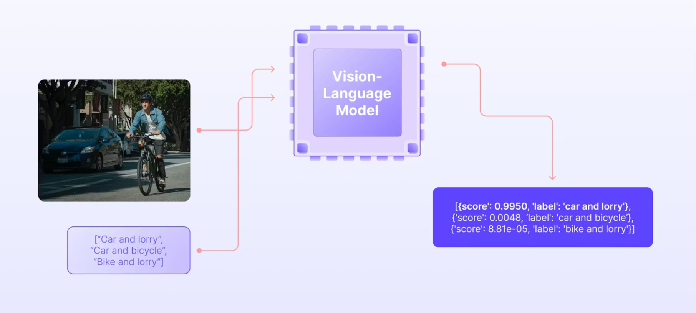
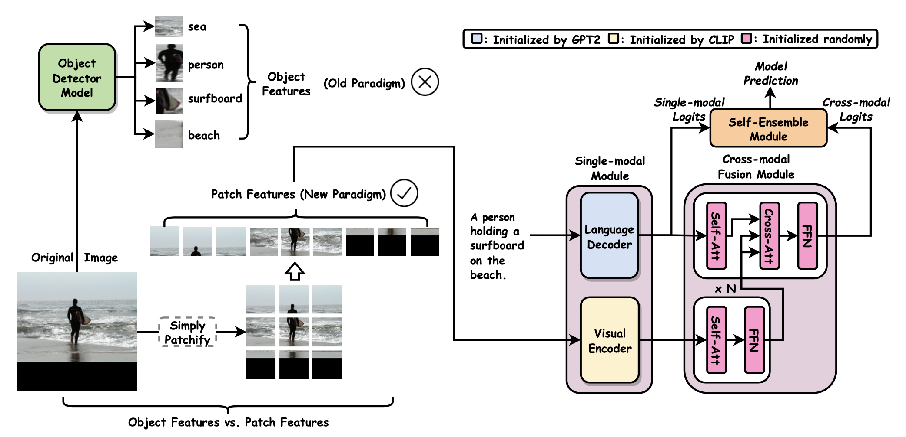

<!DOCTYPE html>
<html lang="en-US">
  <head>
    <meta charset="UTF-8">
    <meta http-equiv="X-UA-Compatible" content="IE=edge">
    <meta name="viewport" content="width=device-width, initial-scale=1">
    <title>VLM for code editing</title>
    <link rel="preconnect" href="https://fonts.gstatic.com" crossorigin="crossorigin"/>
    <link rel="preload" as="style" href="https://fonts.googleapis.com/css2?family=Poppins:wght@600&amp;family=Roboto:wght@300;400;500;700&amp;display=swap"/>
    <link rel="stylesheet" href="https://fonts.googleapis.com/css2?family=Poppins:wght@600&amp;family=Roboto:wght@300;400;500;700&amp;display=swap" media="print" onload="this.media='all'"/>
    <noscript>
      <link rel="stylesheet" href="https://fonts.googleapis.com/css2?family=Poppins:wght@600&amp;family=Roboto:wght@300;400;500;700&amp;display=swap"/>
    </noscript>
    <link href="../css/font-awesome/css/all.min.css?ver=1.2.1" rel="stylesheet">
    <link href="../css/mdb.min.css?ver=1.2.1" rel="stylesheet">
    <link href="../css/aos.css?ver=1.2.1" rel="stylesheet">
    <link href="../css/main.css?ver=1.2.1" rel="stylesheet">
    <noscript>
      <style type="text/css">
        [data-aos] {
            opacity: 1 !important;
            transform: translate(0) scale(1) !important;
        }
      </style>
    </noscript>
  </head>
</html>

<header class="d-print-none">
  <div class="container text-center text-lg-left">
    <div class="pt-4 clearfix">
      <div class="site-nav"> 
        <nav role="navigation">
          <ul class="nav justify-content-center">
            <li class="nav-item"><a class="nav-link" href="#why" title="Why run VLMs locally?"><span class="menu-title">Why run VLMs locally?</span></a>
            </li>
            <li class="nav-item"><a class="nav-link" href="#background" title="Background"><span class="menu-title">Background</span></a>
            </li>
            <li class="nav-item"><a class="nav-link" href="#exp" title="Experiments"><span class="menu-title">Experiments</span></a>
          </ul>
        </nav>
      </div>
    </div>
  </div>
</header>

<div class="page-content">
  <div class="container">
      <div class="shadow-1-strong bg-white my-5 p-5" id="why">
        <div class="why-section">
        <h2 class="h2 fw-light mb-4"> <u>Why run VLMs locally? </u></h2>
        <p> Running VLMs locally gives you a safer and more predictable environment for code editing, debugging, and screenshot based analysis. 
          When everything stays on your machine, you avoid exposure to external systems, reduce latency, and keep full control over how the agent interprets and applies fixes.<br>
         1) Everything stays on your machine and avoids exposure to online adversarial risks seen in services like Comet. <br>
         2) No network round trip means faster extraction of errors and quicker fixes, which makes debugging loops smoother. <br>
         3) Local models do not change silently, so outputs remain stable and predictable across runs, which matters for agents expecting structured formats. <br>
         4) You decide prompts, parsing rules, and patch formats without interference from external safety layers or hidden system prompts. <br>
         5) Local VLMs keep working in secure or disconnected environments, which is important for robotics, embedded systems, and restricted corporate setups. <br>
         <br>

          
         <div style="text-align: center"> 
          <a href="https://encord.com/blog/vision-language-models-guide/"> Source:Encord </a> 
        </div>
        </div>
      </div>    


      <div class="shadow-1-strong bg-white my-5 p-5" id="background">
        <div class="bacground-section">
         <h2 class="h2 fw-light mb-4"> <u>b. Background </u></h2>

         <p> 
           A Vision Language Model is a single model that understands images and text together by converting both into embeddings, aligning them in a shared space, and letting the language side reason over the visual features. 
           It takes an image, extracts high level visual tokens, mixes them with text tokens through attention, and generates an output that reflects both. This lets the model read screenshots, interpret diagrams, extract error messages, or answer questions about anything visible.
           We can now break this into each core component and discuss them in detail one by one.
         </p>
         
          
         <div style="text-align: center"> 
          <a href="https://lilianweng.github.io/posts/2022-06-09-vlm/"> Source:lilianweng.github.io </a> 
        </div>

      <h4 class="h4 fw-light mb-4"> <b>1. Image Encoding </b> </h4>

          <p> 
          Image encoding is the first stage of a VLM, and it is the part that converts a raw image into a structured representation the language model can understand. 
          The model uses a vision backbone, usually a transformer or a convolution-based encoder, to turn pixels into a sequence of dense vectors. 
          These vectors capture color, texture, shapes, and higher level concepts like objects, text regions, or layout. 
          The output becomes a set of visual tokens that can be passed to later layers for alignment and cross attention, which allows the language side of the model to reason about the image in a meaningful way.
          </p>

      <h4 class="h4 fw-light mb-4"> <b>2. Text Encoding </b> </h4>

          <p> 
            Text encoding is the stage where the VLM processes the user’s prompt and converts it into a form that can interact with visual information. 
            The text is first tokenized into discrete units, which can be subword pieces or characters depending on the tokenizer. 
            Each token is then mapped to a dense vector through an embedding layer. 
            These embeddings are passed into a language backbone, usually a transformer encoder or the early layers of a decoder, which applies self attention to capture relationships between words, context, and intent. 
            The output is a structured sequence of text embeddings that represent the meaning of the prompt, and these will later be fused with the visual tokens during cross attention.
          </p>

      <h4 class="h4 fw-light mb-4"> <b>3. Modality Alignment </b> </h4>

          <p> 
            Modality alignment is the stage where the model brings visual embeddings and text embeddings into a common representational space so they can interact meaningfully. 
            The raw outputs of the vision encoder and language encoder live in different statistical and geometric distributions, so the model cannot directly compare or combine them. 
            To solve this, a projection layer or adapter maps the visual tokens into the same dimensional space as the text tokens, and sometimes the text tokens are projected as well. 
            This alignment allows the model to treat both modalities as compatible sequences of tokens. 
            Once aligned, the language side can attend to visual features through cross attention, which lets the model understand connections between what is seen in the image and what is asked in the prompt.
          </p>

      <h4 class="h4 fw-light mb-4"> <b>4. Cross Attention Fusion </b> </h4>

          <p> 
            Cross attention fusion is the stage where the language model actively looks at the visual tokens and pulls in the information it needs. 
            Once both modalities are aligned to the same dimension, the text tokens act as queries, while the visual tokens act as keys and values. 
            For each text position, the model computes attention scores over all visual tokens, which determines how much each visual feature should influence that specific word or reasoning step. 
            This lets the model highlight the parts of the image that are relevant to the prompt, such as error lines in a screenshot or objects in a scene. 
            The weighted combination of visual values is then merged with the text representation, giving the language model a fused view that contains both linguistic context and image features.
          </p>

      <h4 class="h4 fw-light mb-4"> <b>5. Joint Reasoning </b> </h4>

          <p> 
           Joint reasoning is the stage where the fused multimodal representation is processed by the language model to produce meaningful, context aware understanding. 
           After cross attention has injected visual information into the text tokens, the model uses several layers of transformer blocks to integrate these signals, refine them, and propagate them across the sequence. 
            This lets the model connect what it sees with what is being asked, such as linking an error message in a screenshot to the user’s prompt or relating an object in an image to a described action. 
            The model can now infer relationships, identify causes, resolve ambiguities, or extract precise details. 
            This reasoning happens entirely within the language model’s internal layers, which allows it to treat visual features as part of its normal contextual understanding during generation.
          </p>

      <h4 class="h4 fw-light mb-4"> <b>6. Text Generation </b> </h4>

          <p> 
            Text generation is the final stage where the model converts its fused understanding into a coherent output. 
            After joint reasoning blends visual and textual context inside the decoder, the model predicts the next token based on this integrated representation. 
            Each new token is generated by attending to earlier tokens and the fused visual features, allowing the model to describe what it sees, extract errors, answer questions, or provide explanations grounded in the image. 
            This process continues step by step until the response is complete.
          </p>
        </div>
    </div>

    <div class="shadow-1-strong bg-white my-5 p-5" id="exp">
      <div class="exp-section">
        <h2 class="h2 fw-light mb-4"> <u>Experiments </u></h2>

        <p> 
        The experiments section demonstrates how I ran a compact Vision Language Model locally using my system configuration, which included a GPU with at least 4 GB of VRAM, 16 GB of system RAM, Ubuntu as the operating system, and Docker already installed. 
        This setup was sufficient to run quantized multimodal GGUF models efficiently and extract information from screenshots using llama.cpp. 
        The following steps outline the exact workflow from launching the Docker container to executing the VLM on an input image.
        </p>

        <pre>
        <code>
          # 1. Pull the NVIDIA PyTorch Docker image <br>
          docker pull nvcr.io/nvidia/pytorch:24.02-py3 <br>

          # 2. Start a container with GPU access <br>
          docker run -it --gpus all \ <br>
              -v $PWD:/workspace \ <br>
              nvcr.io/nvidia/pytorch:24.02-py3 \ <br>
              bash <br>
          
          # 3. Inside the container, update and upgrade packages <br>
          apt update <br>
          apt upgrade -y <br>
          
          # 4. Install required build tools <br>
          apt install -y git cmake ninja-build <br>
          
          # 5. Clone llama.cpp <br>
          git clone https://github.com/ggerganov/llama.cpp <br>
          cd llama.cpp <br>
          
          # 6. Configure CMake with Ninja and CUDA support <br>
          cmake .. -G Ninja -DGGML_CUDA=ON -DCMAKE_BUILD_TYPE=Release <br>
          
          # 7. Build using Ninja with two jobs <br>
          ninja -C build -j2 <br>
          
          # 8. Build the multimodal CLI binary <br>
          ninja -C build llama-mtmd-cli -j2 <br>
          
         </code>
        </pre>
        </div>
      </div>
    
    <script type="text/javascript" id="clustrmaps" src="//clustrmaps.com/map_v2.js?d=Xu20jxZEZp3NEmsYlQuxeJ7zZA_LYtdA0zElkuGoWm4&cl=ffffff&w=a"></script>
      </div>
    </div>  
  </div>
</div> 
